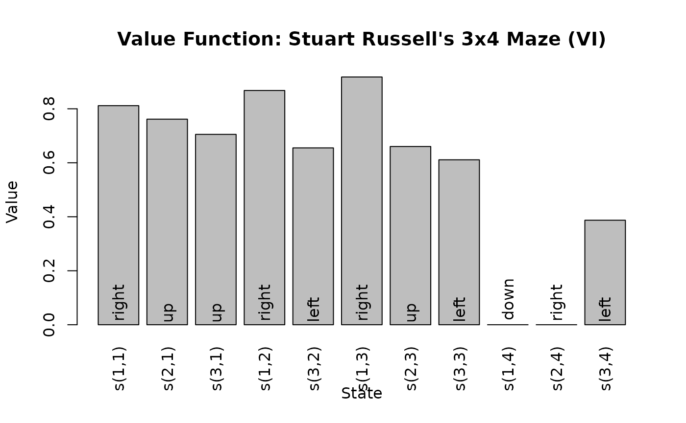

Introduction to Discrete-Time Markov Decision Processes
Michael Hahsler
Source:vignettes/markovDP.Rmd
markovDP.RmdIntroduction
The package markovDP (Hahsler 2024a) provides the infrastructure to work with discrete-time Markov Decision Processes (MDPs) (Bellman 1957; Howard 1960) in R. The focus is on convenience in formulating MDPs, the support of sparse representations (using sparse matrices, lists and data.frames) and visualization of results. Some key components are implemented in C++ to speed up computation. It also provides to the following popular solving procedures:
-
Dynamic Programming
- Value Iteration (Bellman 1957)
- Modified Policy Iteration (Howard 1960; Puterman and Shin 1978)
- Prioritized Sweeping (Moore and Atkeson 1993; Li and Littman 2008)
-
Linear Programming
- Primal Formulation (Manne 1960)
-
Monte Carlo Control
- Monte Carlo Control with Exploring Starts (Sutton and Barto 2018)
- On-policy Monte Carlo Control (Sutton and Barto 2018)
- Off-policy Monte Carlo Control (Sutton and Barto 2018)
-
Termporal Differencing
- Q-Learning (Watkins and Dayan 1992)
- Sarsa (Rummery and Niranjan 1994)
- Expected Sarsa (Sutton and Barto 2018)
-
Sampling
- Random-sample one-step tabular Q-planning (Sutton and Barto 2018)
The implementations follow the description is (Russell and Norvig 2020) and (Sutton and Barto 2018) closely. The implementations represent the state space explicitly, so only problems with small to medium state spaces can be used. It is intended to work with simplified models, to be useful to teach how the different methods work, and to experiment with new algorithmic ideas.
markovDP provides an alternative implementation to the existing R package MDPToolbox (Chades et al. 2017). The main difference is that markovDP has a stronger focus on visualizing models and resulting policies. It is also designed with compatibility with the package pomdp for Partially Observable Markov Processes (Hahsler 2024b) in mind. We also implement some reinforcement learning algorithms (e.g., Q-learning) to solve MDP models. Here the MDP is defines the simulated environment the agent interacts with. Reinforcement learning algorithm implementations can also be found in the R package ReinforcementLearning (Proellochs and Feuerriegel 2020) which focuses on model-free learning from pre-defined observations or interaction with an environment.
In this document, we will give a very brief introduction to the concept of MDPs, describe the features of the R package markovDP, and illustrate the usage with a toy example.
Markov Decision Processes
A Markov decision process (MDP) (Bellman 1957; Howard 1960) is a discrete-time stochastic control process. In each time step, an agent can perform an action which affect the system (i.e., may cause the system state to change). The agent’s goal is to maximize its expected future rewards that depend on the sequence of system states and the agent’s actions in the future. The goal is to find the optimal policy that guides the agent’s actions.
The MDP framework is general enough to model a variety of real-world sequential decision-making problems. Applications include robot navigation problems, machine maintenance, and planning under uncertainty in general.
Definition
A discrete-time MDP can formally be described by
\(\mathcal{S} = \{s_1, s_2, \dots, s_n\}\) is the set of fully observable states.
\(\mathcal{A} = \{a_1, a_2, \dots, a_m\}\) is the set of actions.
\(\mathcal{P}\) a set of conditional transition probabilities. \(p(s'|s,a)\) is the probability for the state transition \(s \rightarrow s'\) conditioned on the taken action \(a\).
\(r\) is the reward function defined by a reward function \(r(s, a, s')\) returning the immediate reward received when transitioning from state \(s\) to \(s'\) while using action \(a\). \(R_t\) is a random variable for the immediate reward at time \(t\).
\(\gamma \in [0, 1]\) is the discount factor.
At each time step \(t\), the environment is in some known state \(s \in \mathcal{S}\). The agent chooses an action \(a \in \mathcal{A}\), which causes the environment to transition to state \(s' \in \mathcal{S}\) with probability \(p(s' \mid s,a)\) and the agent receives the immediate reward \(r(s,a, s')\) as a realization of the random variable \(R_t\). This process repeats for each time step \(t\). The goal is for the agent to choose actions that maximizes the expected sum of discounted future immediate rewards. We fist consider the infinite time horizon case. The optimal action for an MDP depends on the current state and can be specified as a deterministic policy \(\pi_*\) which gives for each state the optimal action \(\pi_*(s)\). This leads to the following optimization problem.
\[\pi_* = \max_\pi \mathbb{E}\left[\sum_{t=1}^{\infty} \gamma^t R_t | \pi\right].\]
For a finite time horizon, only the expectation over the sum up to the time horizon \(T\) is used and the optimal policy also depends on the time step \(t\) and the start state \(S_0\) specified as a distribution over the states.
Notation Used in the Package
The notation used in the package largely follows (Sutton and Barto 2018).
| Notation | Variables/Functions in Code | Description |
|---|---|---|
| \(\mathcal{S}\) |
states, S()
|
the set of state |
| \(s, s'\) |
s, state, start.state,
end.state
|
a state |
| \(\mathcal{A}\) |
actions, A()
|
the set of actions |
| \(a\) |
a, action
|
an action |
| \(t\) | t |
discrete time step |
| \(T\) |
T, horizon
|
final time step (length) of an episode, horizon |
| \(p(s' | s, a)\) |
transition_matrix(), transition_model,
p
|
probability of transition from state \(s\) to state \(s'\) by taking action \(a\) |
| \(r(s,a,s')\) |
reward_matrix(), reward,
r
|
expected immediate reward on transition from s to
s' under action a
|
| \(\gamma\) | discount |
discount factor |
| \(S_t, A_t, R_t\) | random variables for state, action and reward at time \(t\) | |
| \(s_0, S_0\) |
start, start_vector()
|
single start state, start distribution over states |
| \(\pi\) | vector pi, policy
|
a deterministic policy with an action for each state |
| \(\pi(s)\) | prescribed action for state \(s\) in a deterministic policy | |
| \(\pi(a|s)\) | probability of action \(a\) in state \(s\) in a stochastic policy | |
| \(v, v_\pi(s), v_*(s)\) | a state value vector, the value of state \(s\) under policy \(\pi\) or under the optimal policy | |
| \(V\) | vector V
|
the tabular estimate of \(v_\pi\) or \(v_*\) |
| \(q_\pi(s,a), q_*(s,a)\) | value of taking action \(a\) in state \(s\) under policy \(\pi\) or the optimal policy | |
| \(Q\) | matrix Q
|
the tabular estimate of \(q_\pi(s,a)\) or \(q_*(s,a)\) |
| \(B_\pi\) | bellman_operator() |
Bellman operator |
| \(B_*\) | bellman_update() |
Bellman update |
| \(\text{BE}\) | vector BE
|
Bellman error vector (state value difference due to a Bellman update) |
| \(\text{VE}\) | value_error() |
State value difference between two policies |
| \(\delta_t\) | delta |
temporal difference error |
| \(\Delta\) | delta |
max. absolute Bellman error used in value iteration |
Package Functionality
Solving an MDP problem with the markovDP package consists of two steps:
- Define an MDP problem using the function
MDP(), and - solve the problem using
solve_MDP().
Defining an MDP Problem
The MDP() function has the following arguments, each
corresponds to one of the elements of an MDP.
str(args(MDP))
#> function (states, actions, transition_model, reward, discount = 0.9, horizon = Inf,
#> start = "uniform", info = NULL, name = NA)where
statesdefines the set of states.actionsdefines the set of actions.transition_modeldefines the conditional transition probabilities \(p(s' \mid s,a)\),rewardspecifies the reward function with entries for \(r(s, a, s')\),discountis the discount factor in the range \([0,1]\),horizonis the problem horizon as the number of periods to consider.startdefines in what state the problem starts. It is specified as a probability distribution over the states.
While specifying the discount rate and the set of states, and actions
in code is straight-forward. Some arguments can be specified in
different ways. The initial state start can be specified
as
-
A vector of \(n\) probabilities that add up to 1, where \(n\) is the number of states.
start <- c(0.5, 0.3, 0.2) -
The string
"uniform"for a uniform distribution over all states.start <- "uniform" -
A vector of integer indices specifying a subset as start states. The initial probability is uniform over these states. For example, start only in state 3 or start in state 1 and 3:
start <- 3 start <- c(1, 3) -
A vector of strings specifying a subset as equally likely start states.
start <- "state3" start <- c("state1", "state3") -
A vector of strings starting with
"-"specifying which states to exclude from the uniform initial probability distribution.start <- c("-", "state2")
The transition model (transition_model) and reward
function (reward) can be specified in several ways:
- As a
data.framecreated usingrbind()and the helper functionsT_()andR_(). This is the preferred and most sparse representation for most problems. - A named list of matrices representing the transition probabilities or rewards. Each list elements corresponds to an action.
- A function with the model as the first argument and then the same
arguments
T_()orR_()that returns the probability or reward.
More details can be found in the manual page for
MDP().
Solving an MDP
MDP problems are solved with the function solve_MDP()
with the following arguments.
The model argument is an MDP problem created using the
MDP() function. The method argument specifies
what algorithm the solver should use. Available methods including
"value_iteration", "policy_iteration",
"q_learning", "sarsa",
"expected_sarsa" and several more.
Toy Example: Steward Russell’s 4x3 Maze Gridworld MDP
We will demonstrate how to use the package with the 4x3 Maze Gridworld described in Chapter 17 of the textbook “Artificial Intelligence: A Modern Approach” (AIMA) (Russell and Norvig 2020). The simple maze has the following layout:
1234 Transition model:
###### .8 (action direction)
1# +# ^
2# # -# |
3#S # .1 <-|-> .1
######We represent the maze states as a gridworld matrix with 3 rows and 4 columns. The states are labeled s(row, col) representing the position in the matrix. The # (state s(2,2)) in the middle of the maze is an obstruction and not reachable. Rewards are associated with transitions. The default reward (penalty) is -0.04 for each action taken. The start state marked with S is s(3,1). Transitioning to + (state s(1,4)) gives a reward of +1.0, transitioning to - (state s_(2,4)) has a reward of -1.0. Both these states are absorbing (i.e., terminal) states.
Actions are movements (up, right, down, left). The actions are unreliable with a .8 chance to move in the correct direction and a 0.1 chance to instead to move in a perpendicular direction. This means that the maze has a stochastic transition model.
Specifying the Stochastic Maze
After loading the library, we create the states using a gridworld helper function. We first look at the state layout of a \(3 \times 4\) maze.
gw_matrix(gw_init(dim = c(3, 4)))
#> [,1] [,2] [,3] [,4]
#> [1,] "s(1,1)" "s(1,2)" "s(1,3)" "s(1,4)"
#> [2,] "s(2,1)" "s(2,2)" "s(2,3)" "s(2,4)"
#> [3,] "s(3,1)" "s(3,2)" "s(3,3)" "s(3,4)"Then we initialize the grid world with start state, goal state, absorbing states and the wall is a blocked state.
gw <- gw_init(dim = c(3, 4),
start = "s(3,1)",
goal = "s(1,4)",
absorbing_states = c("s(1,4)", "s(2,4)"),
blocked_states = "s(2,2)",
state_labels = list(
"s(3,1)" = "Start",
"s(2,4)" = "-1",
"s(1,4)" = "Goal: +1")
)
gw_matrix(gw)
#> [,1] [,2] [,3] [,4]
#> [1,] "s(1,1)" "s(1,2)" "s(1,3)" "s(1,4)"
#> [2,] "s(2,1)" NA "s(2,3)" "s(2,4)"
#> [3,] "s(3,1)" "s(3,2)" "s(3,3)" "s(3,4)"We see that the blocked state was automatically excluded from the state space.
The initialization function also creates a deterministic transition
function for a grid world with deterministic movement in
gw$transition_prob, but we need to create our own
stochastic transition function. The following function returns a
probability vector for a given action in a given start state. The values
are probabilities to reach an end state.
P <- function(model, action, start.state) {
action <- match.arg(action, choices = A(model))
P <- structure(numeric(length(S(model))), names = S(model))
# absorbing states
if (start.state %in% model$info$absorbing_states) {
P[start.state] <- 1
return(P)
}
if (action %in% c("up", "down")) {
error_direction <- c("right", "left")
} else {
error_direction <- c("up", "down")
}
rc <- gw_s2rc(start.state)
delta <- list(
up = c(-1, 0),
down = c(+1, 0),
right = c(0, +1),
left = c(0, -1)
)
# there are 3 directions. For blocked directions, stay in place
# 1) action works .8
rc_new <- gw_rc2s(rc + delta[[action]])
if (rc_new %in% S(model))
P[rc_new] <- .8
else
P[start.state] <- .8
# 2) off to the right .1
rc_new <- gw_rc2s(rc + delta[[error_direction[1]]])
if (rc_new %in% S(model))
P[rc_new] <- .1
else
P[start.state] <- P[start.state] + .1
# 3) off to the left .1
rc_new <- gw_rc2s(rc + delta[[error_direction[2]]])
if (rc_new %in% S(model))
P[rc_new] <- .1
else
P[start.state] <- P[start.state] + .1
P
} Next, we specify the reward. The most convenient way is a table. Every time a reward is calculated, the last matching row will be used. We set the default reward for any transition to -0.04 which will be used if no other row matches the start or end state. Then we set the reward for the terminal states is +/-1 plus the cost to transition to the state. Finally, we make sure that staying in the absorbing states does not add to the reward.
R <- rbind(
R_( value = -0.04),
R_(end.state = "s(2,4)", value = -1 - 0.04),
R_(end.state = "s(1,4)", value = +1 - 0.04),
R_(start.state = "s(2,4)", value = 0),
R_(start.state = "s(1,4)", value = 0)
)Now, we can create the complete MDP problem.
Maze <- MDP(
name = "Stuart Russell's 3x4 Maze",
discount = 1,
horizon = Inf,
states = gw$states,
actions = gw$actions,
start = "s(3,1)",
transition_model = P,
reward = R,
info = gw$info
)
Maze
#> MDPModel, MDP - Stuart Russell's 3x4 Maze
#> Discount factor: 1
#> Horizon: Inf epochs
#> Size: 4 actions / 11 states
#> Storage: transition prob as function / reward as data.frame. Total size: 28.5 Kb
#> Start: s(3,1)
#> Model list components: 'name', 'discount', 'horizon', 'states',
#> 'actions', 'start', 'transition_model', 'reward', 'info'Solving the Maze
We can solve the problem with the default solver method which is value iteration.
sol <- solve_MDP(Maze)
sol
#> MDPModel, MDP - Stuart Russell's 3x4 Maze
#> Discount factor: 1
#> Horizon: Inf epochs
#> Size: 4 actions / 11 states
#> Storage: transition prob as matrix / reward as matrix. Total size: 32.1 Kb
#> Start: s(3,1)
#> Model list components: 'name', 'discount', 'horizon', 'states',
#> 'actions', 'start', 'transition_model', 'reward', 'info',
#> 'solution'
#>
#> Solved:
#> Method: 'VI'
#> Solution converged: TRUE
#> Solution list components: 'method', 'policy', 'converged', 'delta',
#> 'iterations'The output is an object of class MDP which contains the solution as
an additional list component. It indicates that the algorithm has
converged to a stable solution. The detailed solution information is
stored in $solution
sol$solution
#> $method
#> [1] "VI"
#>
#> $policy
#> $policy[[1]]
#> state V action
#> 1 s(1,1) 0.8115564 right
#> 2 s(2,1) 0.7615521 up
#> 3 s(3,1) 0.7052527 up
#> 4 s(1,2) 0.8678082 right
#> 5 s(3,2) 0.6551492 left
#> 6 s(1,3) 0.9178082 right
#> 7 s(2,3) 0.6602740 up
#> 8 s(3,3) 0.6110843 left
#> 9 s(1,4) 0.0000000 down
#> 10 s(2,4) 0.0000000 right
#> 11 s(3,4) 0.3872455 left
#>
#>
#> $converged
#> [1] TRUE
#>
#> $delta
#> [1] 0.0006911852
#>
#> $iterations
#> [1] 19The policy can be accessed using the policy()
function.
policy(sol)
#> state V action
#> 1 s(1,1) 0.8115564 right
#> 2 s(2,1) 0.7615521 up
#> 3 s(3,1) 0.7052527 up
#> 4 s(1,2) 0.8678082 right
#> 5 s(3,2) 0.6551492 left
#> 6 s(1,3) 0.9178082 right
#> 7 s(2,3) 0.6602740 up
#> 8 s(3,3) 0.6110843 left
#> 9 s(1,4) 0.0000000 down
#> 10 s(2,4) 0.0000000 right
#> 11 s(3,4) 0.3872455 leftThe found policy shows for each state the value (i.e., the value function) and the prescribed action. We can visualize the value function.
plot_value_function(sol)
Additional Functions
The package provides several functions to work with models and policies. In the following, we will organize them into categories. More details about each function, its parameters, and examples can be found in the manual pages.
Access to Model Components
Components of the model are stored in a list and can be accessed directly.
str(sol, max.level = 2)
#> List of 10
#> $ name : chr "Stuart Russell's 3x4 Maze"
#> $ discount : num 1
#> $ horizon : num Inf
#> $ states : chr [1:11] "s(1,1)" "s(2,1)" "s(3,1)" "s(1,2)" ...
#> $ actions : chr [1:4] "up" "right" "down" "left"
#> $ start : chr "s(3,1)"
#> $ transition_model:List of 4
#> ..$ up : num [1:11, 1:11] 0.9 0.8 0 0.1 0 0 0 0 0 0 ...
#> .. ..- attr(*, "dimnames")=List of 2
#> ..$ right: num [1:11, 1:11] 0.1 0.1 0 0 0 0 0 0 0 0 ...
#> .. ..- attr(*, "dimnames")=List of 2
#> ..$ down : num [1:11, 1:11] 0.1 0 0 0.1 0 0 0 0 0 0 ...
#> .. ..- attr(*, "dimnames")=List of 2
#> ..$ left : num [1:11, 1:11] 0.9 0.1 0 0.8 0 0 0 0 0 0 ...
#> .. ..- attr(*, "dimnames")=List of 2
#> $ reward :List of 4
#> ..$ up : num [1:11, 1:11] -0.04 -0.04 0 -0.04 0 0 0 0 0 0 ...
#> .. ..- attr(*, "dimnames")=List of 2
#> ..$ right: num [1:11, 1:11] -0.04 -0.04 0 0 0 0 0 0 0 0 ...
#> .. ..- attr(*, "dimnames")=List of 2
#> ..$ down : num [1:11, 1:11] -0.04 0 0 -0.04 0 0 0 0 0 0 ...
#> .. ..- attr(*, "dimnames")=List of 2
#> ..$ left : num [1:11, 1:11] -0.04 -0.04 0 -0.04 0 0 0 0 0 0 ...
#> .. ..- attr(*, "dimnames")=List of 2
#> $ info :List of 6
#> ..$ gridworld : logi TRUE
#> ..$ dim : num [1:2] 3 4
#> ..$ start : chr "s(3,1)"
#> ..$ goal : chr "s(1,4)"
#> ..$ state_labels :List of 3
#> ..$ absorbing_states: chr [1:2] "s(1,4)" "s(2,4)"
#> $ solution :List of 5
#> ..$ method : chr "VI"
#> ..$ policy :List of 1
#> ..$ converged : logi TRUE
#> ..$ delta : num 0.000691
#> ..$ iterations: int 19
#> - attr(*, "class")= chr [1:2] "MDPModel" "MDP"The special list element "solution" is only available
when the model already contains a policy.
To access components more easily, several accessor functions are available:
-
S()the set of states. -
A()the set of actions. -
actions()find available actions for a state. -
reward_matrix()access the reward structure, -
start_vector()access the initial state probabilities. -
transition_matrix()access transition probabilities. -
transition_graph()converts the transition matrix into a graph for visualization. -
policy()extracts the policy for a solved model.
These functions can efficiently retrieve individual values and convert the components into sparse and dense representations.
Value Function
-
value_function()extracts the value function from a solved MDP. -
q_values()calculates (approximate) Q-values for a given model and value function.
Policy
Policies in this package are deterministic policies with one prescribed action per state. They are represented as a data.frame with columns for:
-
state: The state. -
V: The state’s value (discounted expected utility U) if the policy is followed. -
action: The prescribed action.
Policies are typically created using solve_MDP() and
then stored in the "solution" component of the returned
model. Policies can also be created by the following functions:
-
random_policy()create a random policy. -
manual_policy()specify a policy data.frame manually. -
greedy_policy()generates a greedy policy using Q-values.
A policy can be added to a model for the use in other functions using
add_policy().
The action prescribed by a model with a policy can be calculated
using action(). From a matrix with Q-values,
greedy_action() can be used to find the best action.
The value function for a policy applied to a model can be estimated
using policy_evaluation().
Evaluation
MDP policies can be evaluated using:
-
expected_return()calculates the expected return of a policy -
regret()calculates the regret of a policy relative to a benchmark policy.
Sampling
Trajectories through MDPs are created using
sample_MDP(). The outcome of single actions can be
calculated by act().
Acknowledgments
Development of this package was supported in part by National Institute of Standards and Technology (NIST) under grant number 60NANB17D180.